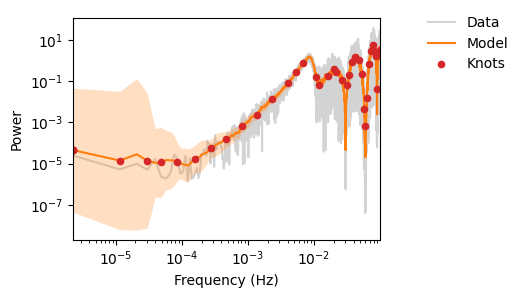

LDC Spritz#
Lets try to make a PSD for the LDC Spritz
import numpy as np
import jax
jax.config.update("jax_enable_x64", True)
np.random.seed(0)
f = "/Users/avaj0001/Downloads/drive-download-20250430T050734Z-1-001/LDC-2b-Spritz-MBHB1.asc"
data = np.loadtxt(f, skiprows=2).T
t, X, Y, Z = data
X = X[:535552]
time = t[:535552]
gap_mask = X == 0
gap_mask = gap_mask[:535552]
# standardise X
SCALING = np.std(X)
X = (X - np.mean(X)) / SCALING
import os
from pywavelet import set_backend
import numpy as np
import matplotlib.pyplot as plt
from scipy.fft import rfft, rfftfreq
from scipy.signal.windows import tukey
from copy import deepcopy
import glob
from PIL import Image
set_backend("jax")
from pywavelet.transforms import from_freq_to_wavelet
from pywavelet.transforms import from_wavelet_to_freq
from pywavelet.types import Wavelet, FrequencySeries, TimeSeries
import jax.numpy as jnp
plot_dir = "out_spritz"
os.makedirs(plot_dir, exist_ok=True)
def make_gif_from_images(image_regex, gif_name, duration=3):
images = []
files = glob.glob(image_regex)
files = sorted(
files,
key=lambda x: int(os.path.basename(x).split("_")[1].split(".")[0]),
)
for filename in files:
images.append(Image.open(filename))
images[0].save(
gif_name,
save_all=True,
append_images=images[1:],
duration=duration * 1000, # Convert seconds to milliseconds
loop=0,
)
[12:06:52] WARNING JAX SUBPACKAGE NOT FULLY TESTED __init__.py:5
INFO Jax running on cpu [32bit precision]. __init__.py:21
WARNING Jax is not running in 64bit precision. To change, use __init__.py:23 jax.config.update('jax_enable_x64', True).
def plot_wnm_and_ts(
timeseries,
freqseries,
wnm,
label="spritz",
psd_approx=None,
ax=None,
save=True,
):
if ax is None:
fig, ax = plt.subplots(3, 1, figsize=(10, 6))
wnm.plot(zscale="log", absolute=True, ax=ax[0])
freqseries.plot_periodogram(ax=ax[1])
if psd_approx is not None:
psd_approx.plot(ax[1], scaling=1e5)
ax[1].legend(frameon=False)
timeseries.plot(ax=ax[2])
fig = ax[1].get_figure()
fig.suptitle(label)
plt.tight_layout()
if save:
plt.savefig(os.path.join(plot_dir, f"{label}.png"))
def plot_mask(wnm, mask, label="mask"):
mask_wnm = deepcopy(wnm)
mask_wnm.data = mask_wnm.data.at[mask].set(1) # set outliers to 1 (masked)
mask_wnm.data = mask_wnm.data.at[~mask].set(
0
) # set non-outliers to 0 (unmasked -- we keep)
d = wnm.data.ravel()
percentage = np.sum(mask) / len(d)
print(f"Percentage of data masked: {percentage:.2%}")
mask_wnm.plot(
absolute=True,
cmap="binary",
show_colorbar=False,
label=f"{percentage:.2%}% masked",
zscale="linear",
)
plt.tight_layout()
plt.savefig(os.path.join(plot_dir, f"{label}.png"))
def mad_threshold(wnm: Wavelet, nsigma: float = 5.0) -> Wavelet:
"""
Sigma-clipping using median and MAD across time for each frequency bin.
"""
print(f"MAD thresholding -- deleting values > nsigma ({nsigma:.2f})* MAD")
wnm_copy = deepcopy(wnm)
data = jnp.abs(wnm.data)
# median and MAD
median = jnp.median(data)
mad = jnp.median(np.abs(data - median))
# mask outliers (True = outlier)
mask = np.abs(data - median) > nsigma * mad
wnm_copy.data = wnm_copy.data.at[mask].set(median)
return wnm_copy, mask
def generate_noise_from_psd(noise_psd, freqs, n_samples):
white_noise_fft = (
np.random.normal(size=len(freqs))
+ 1j * np.random.normal(size=len(freqs))
) / np.sqrt(2)
white_noise_fft[0] /= np.sqrt(2) # Adjust DC component
# Scale amplitude by sqrt(n_samples) to match the PSD normalization with np.fft.irfft
colored_noise_fft = white_noise_fft * np.sqrt(noise_psd * n_samples)
noise_time = np.fft.irfft(colored_noise_fft, n=n_samples)
return noise_time
def denoise(wnm, thr, gap_mask, i=0):
wnm, mask = mad_threshold(wnm, nsigma=thr * 10)
plot_mask(wnm, mask, label=f"mask-{i}")
# plot each iteration
fs = wnm.to_frequencyseries()
ts = fs.to_timeseries()
psd_approx = PSDApprox.fit(ts)
fig, ax = plt.subplots(5, 1, figsize=(10, 10))
plot_wnm_and_ts(
ts,
fs,
wnm,
label=f"Iter_{i + 1:02d}",
psd_approx=psd_approx,
ax=ax,
save=False,
)
print(f"ts ND : {ts.ND}, wnm ND: {wnm.ND}")
print("N Gaps:", np.sum(gap_mask))
print("Filling gaps with generated noise")
# fill in gap
generated_noise = generate_noise_from_psd(
psd_approx.power * 1e2, psd_approx.freq, ts.ND
)
generated_noise = generated_noise.reshape(-1, 1).T[0]
generated_noise = generated_noise[: len(ts.data)]
# fill in the gaps
time_data = np.array(ts.data)
print("BEFORE")
print(np.std(generated_noise))
# scale the generated_noise to match the original ts.data
# generated_noise = generated_noise * np.std(ts.data[0:100]) + np.mean(ts.data[0:100])
# print(np.std(generated_noise))
time_data[gap_mask] = generated_noise[gap_mask] * 1e2
new_ts = TimeSeries(time_data, time=ts.time)
new_wnm = new_ts.to_frequencyseries().to_wavelet(Nf=256)
ts.plot(ax[3])
ax[3].plot(
ts.time[gap_mask],
generated_noise[gap_mask],
color="tab:orange",
label="generated noise",
)
# new_ts.plot(ax[3], color='tab:orange', alpha=0.5)
new_wnm.plot(zscale="log", absolute=True, ax=ax[4])
plt.savefig(
os.path.join(
plot_dir,
f"Iter_{i + 1:02d}",
)
)
return wnm
def iterative_denoise(
wnm: Wavelet,
gap_mask,
iterations: int = 5,
base_threshold: float = 0.3,
decay: float = 0.9,
) -> Wavelet:
"""
Iteratively apply thresholding, decaying the threshold each time.
method: 'global', 'mad', or 'blockwise'
"""
new_wnm = deepcopy(wnm)
for i in range(iterations):
thr = base_threshold * (decay**i)
new_wnm = denoise(wnm, thr, gap_mask, i)
return new_wnm
ts = TimeSeries(X[:535552], time=t[:535552])
print(f"ts ND : {ts.ND}")
fs = ts.to_frequencyseries()
orig_wnm = fs.to_wavelet(Nf=256)
plot_wnm_and_ts(ts, fs, orig_wnm, label="Iter_00")
wnm = fs.to_wavelet(Nf=256)
print(f"wnm ND : {wnm.ND}")
# psd_approx = PSDApprox.fit(ts)
#
# generated_noise = generate_noise_from_psd(psd_approx.power, psd_approx.freq, ts.ND)
wnm = iterative_denoise(
wnm, gap_mask, iterations=1, base_threshold=0.9, decay=0.9
)
# make_gif_from_images(os.path.join(plot_dir, 'Iter_*.png'), os.path.join(plot_dir, 'wnm_psd_gen.gif'), duration=0.5)
ts ND : 535552
wnm ND : 535552
MAD thresholding -- deleting values > nsigma (9.00)* MAD
Percentage of data masked: 3.17%
ts ND : 535552, wnm ND: 535552
N Gaps: 10080
Filling gaps with generated noise
BEFORE
2.8030794625010573
# gap_mask = ts.data == 0
# ts.m
---------------------------------------------------------------------------
AttributeError Traceback (most recent call last)
Cell In[43], line 2
1 gap_mask = ts.data == 0
----> 2 ts.m
AttributeError: 'TimeSeries' object has no attribute 'm'
# i = 0
# wnm, mask = mad_threshold(wnm, nsigma=10)
#
# # plot each iteration
# fs = wnm.to_frequencyseries()
# ts = fs.to_timeseries()
#
# psd_approx = PSDApprox.fit(ts)
#
fig, ax = plt.subplots(5, 1, figsize=(10, 10))
plot_wnm_and_ts(
ts,
fs,
wnm,
label=f"Iter_{i + 1:02d}",
psd_approx=psd_approx,
ax=ax,
save=False,
)
# fill in gap
generated_noise = generate_noise_from_psd(
psd_approx.power * 1e1, psd_approx.freq, ts.ND
)
generated_noise = generated_noise.reshape(-1, 1).T[0]
generated_noise = generated_noise[: len(ts.data)]
# fill in the gaps
time_data = np.array(ts.data)
print("BEFORE")
print(np.std(generated_noise))
# scale the generated_noise to match the original ts.data
# generated_noise = generated_noise * np.std(ts.data[0:100]) + np.mean(ts.data[0:100])
# print(np.std(generated_noise))
time_data[gap_mask] = generated_noise[gap_mask] * 1e1
new_ts = TimeSeries(time_data, time=ts.time)
new_wnm = new_ts.to_frequencyseries().to_wavelet(Nf=256)
ts.plot(ax[3])
ax[3].plot(
ts.time[gap_mask],
generated_noise[gap_mask],
color="tab:orange",
label="generated noise",
)
# new_ts.plot(ax[3], color='tab:orange', alpha=0.5)
new_wnm.plot(zscale="log", absolute=True, ax=ax[4])
plt.savefig(
os.path.join(
plot_dir,
f"Iter_{i + 1:02d}",
)
)
BEFORE
0.8844361892657235
ts.time[gap_mask]
array([], dtype=float64)
np.std(ts.data)
np.float64(1.2227757197604746e-20)
generated_noise = generate_noise_from_psd(
psd_approx.power * 1e5, psd_approx.freq, 2048
)
plt.plot(generated_noise * 1e-18)
[<matplotlib.lines.Line2D at 0x1225e47c0>]
plt.plot(ts.time, np.array(generated_noise * 1e-20))
# plt.scatter(ts.time[gap_mask], generated_noise[gap_mask], color="tab:orange", zorder=10)
---------------------------------------------------------------------------
ValueError Traceback (most recent call last)
Cell In[54], line 1
----> 1 plt.plot(ts.time, np.array(generated_noise * 1e-20))
2 plt.scatter(ts.time[gap_mask], generated_noise[gap_mask], color="tab:orange", zorder=10)
File ~/miniforge3/envs/pywavelet/lib/python3.10/site-packages/matplotlib/pyplot.py:3827, in plot(scalex, scaley, data, *args, **kwargs)
3819 @_copy_docstring_and_deprecators(Axes.plot)
3820 def plot(
3821 *args: float | ArrayLike | str,
(...)
3825 **kwargs,
3826 ) -> list[Line2D]:
-> 3827 return gca().plot(
3828 *args,
3829 scalex=scalex,
3830 scaley=scaley,
3831 **({"data": data} if data is not None else {}),
3832 **kwargs,
3833 )
File ~/miniforge3/envs/pywavelet/lib/python3.10/site-packages/matplotlib/axes/_axes.py:1777, in Axes.plot(self, scalex, scaley, data, *args, **kwargs)
1534 """
1535 Plot y versus x as lines and/or markers.
1536
(...)
1774 (``'green'``) or hex strings (``'#008000'``).
1775 """
1776 kwargs = cbook.normalize_kwargs(kwargs, mlines.Line2D)
-> 1777 lines = [*self._get_lines(self, *args, data=data, **kwargs)]
1778 for line in lines:
1779 self.add_line(line)
File ~/miniforge3/envs/pywavelet/lib/python3.10/site-packages/matplotlib/axes/_base.py:297, in _process_plot_var_args.__call__(self, axes, data, return_kwargs, *args, **kwargs)
295 this += args[0],
296 args = args[1:]
--> 297 yield from self._plot_args(
298 axes, this, kwargs, ambiguous_fmt_datakey=ambiguous_fmt_datakey,
299 return_kwargs=return_kwargs
300 )
File ~/miniforge3/envs/pywavelet/lib/python3.10/site-packages/matplotlib/axes/_base.py:494, in _process_plot_var_args._plot_args(self, axes, tup, kwargs, return_kwargs, ambiguous_fmt_datakey)
491 axes.yaxis.update_units(y)
493 if x.shape[0] != y.shape[0]:
--> 494 raise ValueError(f"x and y must have same first dimension, but "
495 f"have shapes {x.shape} and {y.shape}")
496 if x.ndim > 2 or y.ndim > 2:
497 raise ValueError(f"x and y can be no greater than 2D, but have "
498 f"shapes {x.shape} and {y.shape}")
ValueError: x and y must have same first dimension, but have shapes (535552,) and (2048,)

Fitting PSD#
import jax
import jax.numpy as jnp
import optax
from typing import Tuple
def fit_psd_spline_jax(
freqs: jnp.ndarray, # shape [N]
psd_obs: jnp.ndarray, # shape [N]
n_knots: int = 20,
lr: float = 1e-3,
steps: int = 200,
log_eps: float = 1e-12,
) -> Tuple[jnp.ndarray, jnp.ndarray, jnp.ndarray]:
knots = jnp.linspace(freqs[0], freqs[-1], n_knots)
log_true = jnp.log(psd_obs + log_eps)
init_knot_logs = jnp.interp(knots, freqs, log_true)
optimizer = optax.adam(lr)
opt_state = optimizer.init(init_knot_logs)
def loss_and_grads(knot_logs):
pred = jnp.interp(freqs, knots, knot_logs)
loss = jnp.mean((pred - log_true) ** 2)
grads = jax.grad(
lambda kl: jnp.mean((jnp.interp(freqs, knots, kl) - log_true) ** 2)
)(knot_logs)
return loss, grads
def step(i, state):
knot_logs, opt_state = state
loss, grads = loss_and_grads(knot_logs)
updates, opt_state = optimizer.update(grads, opt_state)
knot_logs = optax.apply_updates(knot_logs, updates)
return (knot_logs, opt_state)
# training loop
knot_logs_final, _ = jax.jit(
lambda kl, os: jax.lax.fori_loop(0, steps, step, (kl, os))
)(init_knot_logs, opt_state)
log_psd_fit = jnp.interp(freqs, knots, knot_logs_final)
return jnp.exp(log_psd_fit), knot_logs_final, knots
std = np.std(ts.data)
mean = np.mean(ts.data)
ynorm = (ts.data - mean) / std
sampling_freq = float(1 / (ts.time[1] - ts.time[0]))
freq = np.fft.rfftfreq(len(ynorm), d=1 / sampling_freq)
power = np.abs(jnp.fft.rfft(ynorm)) ** 2 / len(ynorm)
freq = freq[1::5]
power = power[1::5]
psd_fit, fitted_logs, knots = fit_psd_spline_jax(freq, power)
# then you can plot
import matplotlib.pyplot as plt
plt.loglog(freq, power, label="data")
plt.loglog(freq, psd_fit, label="spline fit")
plt.scatter(knots, jnp.exp(fitted_logs), color="C1", label="knots")
plt.legend()
plt.show()
import jax
import jax.numpy as jnp
from jax import lax
import jax
import jax.numpy as jnp
from jax import lax
from dataclasses import dataclass
@dataclass
class PSDApprox:
freq: jnp.array
power: jnp.array
@classmethod
def fit(cls, ts, window_size=101):
"""
Calculates a running median approximation of the Power Spectral Density (PSD)
from a periodogram.
Args:
periodogram: A JAX array representing the periodogram.
window_size: An integer representing the size of the running median window.
Must be odd.
Returns:
A JAX array representing the running median PSD approximation.
"""
std = np.std(ts.data)
mean = np.mean(ts.data)
ynorm = (ts.data - mean) / std
sampling_freq = float(1 / (ts.time[1] - ts.time[0]))
freq = np.fft.rfftfreq(len(ynorm), d=1 / sampling_freq)
power = np.abs(jnp.fft.rfft(ynorm)) ** 2 / len(ynorm)
freq = freq[1::5]
periodogram = power[1::5]
periodogram = jnp.array(periodogram, dtype=jnp.float64)
if window_size % 2 == 0:
raise ValueError("Window size must be odd for running median.")
padding = window_size // 2
padded_periodogram = jnp.pad(
periodogram, (padding, padding), mode="reflect"
)
def median_window(i):
window = jax.lax.dynamic_slice(
padded_periodogram, (i,), (window_size,)
)
return jnp.median(jnp.sort(window))
n = periodogram.shape[0]
indices = jnp.arange(n)
running_median = jax.vmap(median_window)(indices)
# rescale the running median to have the same power as the original
running_median = running_median
return cls(freq=freq, power=running_median * std**2)
def plot(self, ax, scaling=1):
p = np.array(self.power) * scaling
ax.loglog(self.freq, p, label="running median approx", linestyle="--")
psd_approx = PSDApprox.fit(ts)
fig, ax = plt.subplots(1, 1, figsize=(10, 6))
ax.loglog(freq, power, label="Data")
psd_approx.plot(ax)
psd_approx.plot(ax, scaling=1e3)
psd_approx = running_median_psd_approximation(fs.periodogram, window_size=101)
plt.loglog(freq, power, label="spline fit")
plt.plot(freq, psd_approx, label="running median approx", linestyle="--")
---------------------------------------------------------------------------
ValueError Traceback (most recent call last)
Cell In[8], line 5
1 psd_approx = running_median_psd_approximation(fs.periodogram, window_size=101)
4 plt.loglog(freq, power, label="spline fit")
----> 5 plt.plot(freq, psd_approx, label="running median approx", linestyle='--')
File ~/miniforge3/envs/pywavelet/lib/python3.10/site-packages/matplotlib/pyplot.py:3827, in plot(scalex, scaley, data, *args, **kwargs)
3819 @_copy_docstring_and_deprecators(Axes.plot)
3820 def plot(
3821 *args: float | ArrayLike | str,
(...)
3825 **kwargs,
3826 ) -> list[Line2D]:
-> 3827 return gca().plot(
3828 *args,
3829 scalex=scalex,
3830 scaley=scaley,
3831 **({"data": data} if data is not None else {}),
3832 **kwargs,
3833 )
File ~/miniforge3/envs/pywavelet/lib/python3.10/site-packages/matplotlib/axes/_axes.py:1777, in Axes.plot(self, scalex, scaley, data, *args, **kwargs)
1534 """
1535 Plot y versus x as lines and/or markers.
1536
(...)
1774 (``'green'``) or hex strings (``'#008000'``).
1775 """
1776 kwargs = cbook.normalize_kwargs(kwargs, mlines.Line2D)
-> 1777 lines = [*self._get_lines(self, *args, data=data, **kwargs)]
1778 for line in lines:
1779 self.add_line(line)
File ~/miniforge3/envs/pywavelet/lib/python3.10/site-packages/matplotlib/axes/_base.py:297, in _process_plot_var_args.__call__(self, axes, data, return_kwargs, *args, **kwargs)
295 this += args[0],
296 args = args[1:]
--> 297 yield from self._plot_args(
298 axes, this, kwargs, ambiguous_fmt_datakey=ambiguous_fmt_datakey,
299 return_kwargs=return_kwargs
300 )
File ~/miniforge3/envs/pywavelet/lib/python3.10/site-packages/matplotlib/axes/_base.py:494, in _process_plot_var_args._plot_args(self, axes, tup, kwargs, return_kwargs, ambiguous_fmt_datakey)
491 axes.yaxis.update_units(y)
493 if x.shape[0] != y.shape[0]:
--> 494 raise ValueError(f"x and y must have same first dimension, but "
495 f"have shapes {x.shape} and {y.shape}")
496 if x.ndim > 2 or y.ndim > 2:
497 raise ValueError(f"x and y can be no greater than 2D, but have "
498 f"shapes {x.shape} and {y.shape}")
ValueError: x and y must have same first dimension, but have shapes (53568,) and (267841,)
psd_approx = PSDApprox.fit(ts)
fig, ax = plt.subplots(1, 1, figsize=(10, 6))
ax.loglog(freq, power, label="Data")
psd_approx.plot(ax)
%reload_ext autoreload
%autoreload 2
from log_psplines.psplines import LogPSplines, Periodogram
from log_psplines.datasets import Timeseries as PsplinesTimeseries
from log_psplines.plotting import plot_pdgrm
from log_psplines.mcmc import run_mcmc
def get_basic_psd(ts):
psd_approx = PSDApprox.fit(ts)
std = np.std(ts.data)
mean = np.mean(ts.data)
ynorm = (ts.data - mean) / std
new_ts = PsplinesTimeseries(t=ts.time, y=ynorm, std=std)
periodogram = new_ts.to_periodogram()
spline_model = LogPSplines.from_periodogram(
periodogram=periodogram,
n_knots=30,
degree=3,
diffMatrixOrder=2,
parametric_model=psd_approx.power,
)
psd_fit = spline_model() * std**2
freq = periodogram.freqs
return freq, psd_fit
#
# freq, psd = get_basic_psd(ts)
# fig, ax = ts.to_frequencyseries().plot_periodogram()
# ax.plot(freq, psd, label='LogPSpline fit', color='red')
#
# # new_ts = new_ts.standardise()
# periodogram = new_ts.to_periodogram()
#
# plot_pdgrm(
# pdgrm=periodogram
# )
# new_ts.fs
# print(new_ts.std)
#
# plt.plot(new_ts.t, new_ts.y)
psd_approx = PSDApprox.fit(ts)
pgrm = Periodogram(freqs=freq[1::5], power=power[1::5])
approx_pdgrm = Periodogram(
freqs=freq[1::5], power=(psd_approx.power + 1e-6)[1::5]
)
# periodogram = new_ts.to_periodogram()
# periodogram = periodogram.downsample(factor=2)
spline_model = LogPSplines.from_periodogram(
periodogram=approx_pdgrm,
n_knots=40,
degree=3,
diffMatrixOrder=2,
knot_kwargs=dict(frac_log=0.2),
parametric_model=psd_approx.power[1::5],
)
# psd_fit = spline_model()*std**2
# freq = periodogram.freqs
#
# plot_pdgrm(approx_pdgrm,
# spline_model=spline_model,)
# spline_model.weights = jnp.zeros_like(spline_model.weights)
fig, ax = plot_pdgrm(
pgrm,
spline_model=spline_model,
)
(<Figure size 400x300 with 1 Axes>,
<Axes: xlabel='Frequency (Hz)', ylabel='Power'>)
spline_model.weights
Array([-1.83805977e-04, -8.91185326e-04, -3.50013510e-03, -1.41638674e-02,
-4.68858779e-02, -5.48335022e-02, -8.07325358e-02, -4.11451571e-02,
-2.90809579e-02, 1.35925098e-02, 1.89796170e-03, -1.22993804e-01,
-4.31864295e-02, -6.86834892e-02, -2.76254263e-02, -5.92031779e-02,
-3.12930658e-02, -1.45095947e-01, -1.69640967e-01, -9.97554737e-03,
-3.66073730e-02, 8.64408365e-04, 4.08797426e-03, -1.64652760e-02,
-5.38484879e-03, -9.39892661e-02, -4.52676155e-02, -3.97503113e-01,
-1.78027318e-01, -5.50896853e-02, -2.90669526e-02, 1.80494641e-02,
2.39938545e-02, 3.91933908e-02, 3.06856455e-02, 2.16521871e-02,
-3.09561810e-04, -1.92035073e-01, 6.27716268e-02, -1.60554802e-02,
3.00683515e-02, 3.03128060e-03], dtype=float64)
import time
# approx_pdgrm = approx_pdgrm.downsample(10)
t0 = time.time()
samples, spline_model = run_mcmc(
pgrm,
parametric_model=psd_approx.power[1::5],
n_knots=40,
num_samples=500,
num_warmup=500,
)
runtime = float(time.time()) - t0
fig, ax = plot_pdgrm(pgrm, spline_model, sampler.get_samples()["weights"])
fig.savefig(os.path.join(plot_dir, f"test_mcmc.png"))
Spline model: LogPSplines(knots=40, degree=3, n=10711)
sample: 100%|| 1000/1000 [05:59<00:00, 2.78it/s, 1023 steps of size 5.86e-04. acc. prob=0.93]
---------------------------------------------------------------------------
NameError Traceback (most recent call last)
Cell In[87], line 18
6 samples, spline_model = run_mcmc(
7 pgrm,
8 parametric_model=psd_approx.power[1::5],
9 n_knots=40, num_samples=500, num_warmup=500,
10 )
14 runtime = float(time.time()) - t0
---> 18 fig, ax = plot_pdgrm(pgrm, spline_model, sampler.get_samples()['weights'])
19 fig.savefig(os.path.join(plot_dir, f"test_mcmc.png"))
NameError: name 'sampler' is not defined
fig, ax = plot_pdgrm(pgrm, spline_model, samples.get_samples()["weights"])
fig.savefig(os.path.join(plot_dir, f"test_mcmc.png"))

fig, ax = plot_pdgrm(pgrm, spline_model, samples.get_samples()["weights"])
ax.set_xlim(left=10e-5)
# fig.savefig(os.path.join(plot_dir, f"test_mcmc.png"))
(0.0001, np.float64(0.0999925310707457))
new_ts = PsplinesTimeseries(t=ts.time, y=ts.data)
new_ts.standardise()
periodogram = new_ts.to_periodogram()
import jax
import jax.numpy as jnp
import optax
logP = jnp.log(power + 1e-6) # log-PSD (add eps to avoid log(0))
# Define knots for piecewise-linear fit on [0,0.5]
num_knots = 40
knots = jnp.linspace(freq[0], freq[-1], num_knots)
# Initialize spline coefficients (values at knots)
coefs = jnp.zeros(num_knots)
# Hyperparameters: smoothing penalty weight
lambda_penalty = 1e-2
def loss_fn(coefs, freq, logP):
# Linear interpolation of coefs at frequencies
y_pred = jnp.interp(freq, knots, coefs)
# Mean squared error on log-PSD
mse = jnp.mean((y_pred - logP) ** 2)
# Second-difference penalty
pen = lambda_penalty * jnp.sum(jnp.diff(coefs, 2) ** 2)
return mse + pen
# Use Optax to minimize the loss
optimizer = optax.adam(learning_rate=0.1)
opt_state = optimizer.init(coefs)
@jax.jit
def train_step(coefs, opt_state, freq, logP):
loss, grads = jax.value_and_grad(loss_fn)(coefs, freq, logP)
updates, opt_state = optimizer.update(grads, opt_state)
coefs = optax.apply_updates(coefs, updates)
return coefs, opt_state, loss
# Run a few training iterations
for i in range(500):
coefs, opt_state, loss = train_step(coefs, opt_state, freq, logP)
# The fitted smooth log-PSD is:
logP_smooth_spline = jnp.interp(freq, knots, coefs)
plt.loglog(freq, power)
plt.loglog(freq, jnp.exp(logP_smooth_spline), label="spline fit")
[<matplotlib.lines.Line2D at 0x12d302620>]
gap_mask
array([False, False, False, ..., False, False, False])